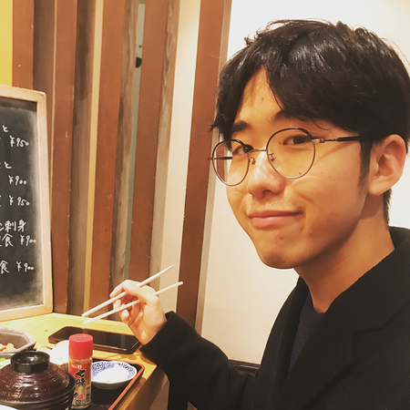

今回は自作キーボード「Lily58」の設計者のゆーちくんに取材させていただくことになりました。ゆーちくん、よろしくおねがいします。

Lily58などのキーボード開発したり色々なことしているゆーちと申します。よろしくおねがいします。
ゆーちくんは、僕の高校時代の友人で、現在大学生をしながら色々やってるんだよね。キーボードを開発してる大学生って結構いたりするのかな？
そうですね、自分が開発始めた頃はほとんど居なかったですが最近では見かけるようになりましたし、高校生でも自作キーボードの開発をやっている方とかも居ますね。
そうなんだ。結構若い人の間でも流行ってきたんだね。ゆーちくんは大学生の時に始めたの？
自分が自作キーボードの世界に入り込んで開発を始めたのは高校3年生頃だったと思います。
その当時は結構始めるのが早い方だったんだね。何がきっかけでその世界に入ったの？
その当時は日本で自作キーボードの流行初期だったと思います。
自作キーボードの世界に入り込むそれ以前からErgodox等の分割キーボードがあることは知っていたのですが、ある日Twitterのタイムラインで自作キーボードのグループバイ(共同購入)で購入された方の完成品のツイートを見かけて興味が湧いたのが始まりです。
やっぱ変わった形のキーボードを初めて見た時は興味湧いちゃうよねー。僕が自作キーボードの世界に入ったのは、ゆーちくんのLily58をみて、作ってみたいなと思ったのがきっかけだった。
分割キーボード、ガジェットとして見てもおもしろいですよね。
Lily58が自作キーボードに入るきっかけとなってもらえたのは嬉しいです！
Lily58がなかったら、今までの僕のプログラマーとしての仕事のクオリティが少し落ちてたかも。それぐらい重宝してる。
ゆーちくんは、自作キーボードのユーザーとして、何かライフスタイルは変わった？
確かにそれはデカイね。キーボードを打ちたいから、デスクに向かったりするよね。仕事のモチベーションが結構上がったりする。
効率がすごく上がる！！！って感じではないですが嗜好品みたいな感じで気持ち的な面、モチベーションに直結しますよね
そうそう。嗜好品として、日々の手入れがとても楽しい。お金がかかるという意味でも、嗜好品要素は強いよね。
それでは、Lily58の開発の話を聞きたいんだけど
ゆーちくんはLily58をたくさん組み上げたと思うんだけど、その中でも一番お気に入りのLily58を見せてもらってもいい？
たくさん作ってきたので非常に迷ったのですがLily58 Proですかね
いいね。このキーキャップがLily58ではよく見る
MDA Big Bangというキーキャップなのですがキーがピッタリ合うし見た目の印象や触り心地がとても良いキーキャップですね
でしょ！無刻印なんだけど、タイピング極めてます感があってとても気に入ってるんだ。
同じLily58でもこんなに違うデザインになって、それぞれの好みに合わせて作れるのも自作の良い所だよね
キースイッチやキーキャップ、ケーブルなどでオリジナルの自作キーボードにすることができますね
かわいい感じのキーボードにすることも出来るから、女性の方でも結構楽しめたりするんだよね。
かわいいキーキャップも探せばたくさんありますからね！
ところで、Lily58はゆーちくんが設計したものだけど、なぜ既存の自作キーボードセットで終わらず、自分で設計しようと思ったの？
自分が興味を持ち始めた当時はキットを買うには海外から個人輸入をしないといけませんでした。
いくつかのキットを輸入して試しましたが自分の手にはいまいち合わなかったです。基板のデータはオープンソースで公開されているものが多かったのでそれなら自分で合うものを設計してみようと思ったのが始まりです。
なるほど。自分にとっての究極のキーボードが見つからなかったんだね。試作は結構大変だったんじゃない？
ソフトウェア開発みたくすぐにビルドして試すという事ができないのがハードウェア開発の大変なところですね。1回の試作で基板を発注して手元に届くまで1週間以上はかかります。
そうですね、中国の工場に発注をするのですが送料を入れて5000円以上はかかります。
なのでなるべく試作の回数を減らすように努力してました
ちなみに、聞いていいかわからないけど、Lily58とLily58 Proを販売スタートさせるまで、どれぐらいお金かかった？
あまり覚えてないのですが3,4回はリリースまでに試作をしたので数万円はかかっていると思います
そんな感じなのか。ハードウェアの試作はもうちょっとかかるのかと思ってた。でも個人としては財布に厳しいね。
自費の試作を経て、Lily58はゆーちくんにとっての「究極のキーボード」になれたのかな？
個人的には満足はしていますが究極のキーボードと呼べるかは難しいですね...
そうなのか。実は僕のほうがLily58を自分にとっての究極のキーボードだと思ってる笑
押しづらいキーがないのと、僕の手の形にちょうどフィットしている感覚があって、長時間タイピングしていても疲れなくて、リズムに乗るような感じでタイピングできてる
形は良いと思っているのですが高級な自作キーボードの世界を知ってしまったので打鍵感などの見た目的な部分が今は気になっています。
あーそうか。ケースとかもこだわらないと本当に良い音が出せないんだね。僕は知らないほうが幸せかもしれない...
高級な方向に進むととてもお金がかかるので程々にしたいですね
そうだね。ちなみに今でも自作じゃないキーボードは使ってるの？
HHKB Professional HYBRID Type-Sをその日の気分で使ったりしてます
僕と全く同じだ笑HHKBにはHHKBにしかない、極上のタイプ音があるよね。
僕は悔しいけど、静電容量式より好きな自作キーボードのタイプ音に出会えてない。さっき言ってた高級キーボードの世界に入ると、静電容量式以上に心地よい音って出せたりするのかな？主観になってしまうけど。
心地よい音は出せますが静電容量式を超えられるかは個人の感想になっちゃいますね。自分は静電容量式とメカニカルスイッチは切り分けて考えています。
なるほどね。高級キーボードには高級キーボードの良さがあり、自作には自作の良さがあるんだね。
かわいい形だね。BLEってことは、Bluetooth接続なんだ
完全無線の自作キーボードで、打鍵感も高級キーボードのように良く気に入ってます
キーボードユーザーとして、ここだけは譲れないポイントはある？
やはり打ちにくいと打鍵感や見た目が良くても使わなくなってしまいがちです
なるほどね。確かに僕のLily58の一番好きな所は打ちやすさだなあ。
Lily58は打ちやすさは結構考えた部分なのでそう言ってもらえると嬉しいです
つい先日Lily58 Lite Rev2という新しいバージョンのLily58を発売開始しました。Lily58 Lite Rev2は一部の部品を予め取り付け済みにしたり、組み立ての手順書を動画化したり色々な工夫をして自作キーボード初心者の方でも簡単に組み立てできるようにしましたので初めての1台に選んでいただければと思ってます。
おお、どんどん進化してるね！これからも究極のキーボード作りは続きそうですね。ゆーちくん、今回はありがとうございました！